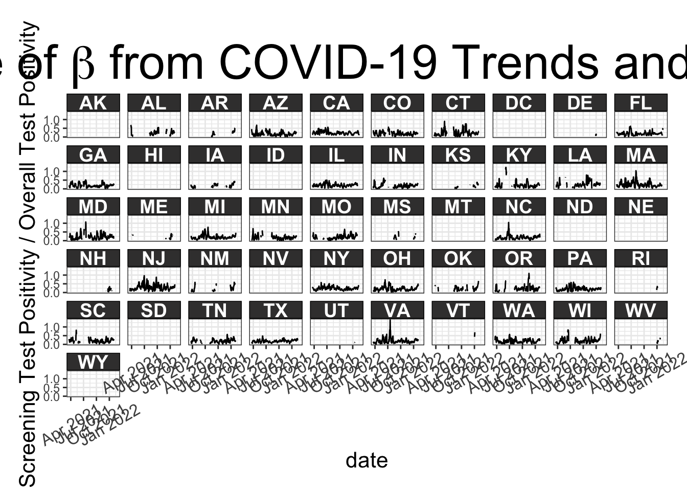

State Level Correction
Quinn White
2023-05-02
Base Functions
source(here('analysis','base_functions','base_functions.R'))
source(here('analysis','base_functions','get_melded.R'))Initial Setup
Set Prior Parameters
# include slow plots comparing melded distributions for modified priors to original melded distribution
include_slow <- TRUE
# only include subset of rows for testing
testing <- FALSE
# whether to save results adj_v*.RDS (if testing, don't save results)
save <- TRUE
set.seed(123)
prior_params <- list(
alpha_mean = .95,
alpha_sd = 0.08,
alpha_bounds = NA,
# alpha_bounds = c(.8,1),
beta_mean = .15,
beta_sd =.09,
beta_bounds = NA,
# beta_bounds = c(0.002, 0.4),
s_untested_mean = .03,
s_untested_sd = .0225,
# s_untested_bounds = c(0.0018, Inf),
s_untested_bounds = NA,
p_s0_pos_mean = .4,
p_s0_pos_sd = .1225,
p_s0_pos_bounds = NA,
# p_s0_pos_bounds = c(.25, .7),
pre_nsamp = 1e6,
post_nsamp = 1e5)
corrected_sample_reps <- 1e3
# relevant for versions 2,3
beta_smoothing_span <- .33
# relevant for versions 3,4
s_untested_smoothing_span <- .2Implementation
Version 1
dates <- readRDS(here('data/date_to_biweek.RDS'))
state_testing <- readRDS(paste0(here::here(),
"/data/state_level/tests_biweekly_all_states_JHU.RDS")) %>%
inner_join(dates)## Joining with `by = join_by(biweek)`## Warning in inner_join(., dates): Detected an unexpected many-to-many relationship between `x` and `y`.
## ℹ Row 1 of `x` matches multiple rows in `y`.
## ℹ Row 71 of `y` matches multiple rows in `x`.
## ℹ If a many-to-many relationship is expected, set `relationship =
## "many-to-many"` to silence this warning.state_testing <- state_testing %>%
rename(fips = state)%>%
select(-date) %>%
distinct()
# only use a few rows if testing
state_testing <- if(testing) state_testing %>% filter(biweek >=6) %>% slice_sample(n=15) else state_testing
results_path <- here("analysis/results/adj_biweekly_state_jhu/")priors_version <- "v1"
melded <- do.call(get_melded, prior_params)
# check there are no NAs
# covid_county %>%
# filter(if_any(everything(), is.na))
tictoc::tic()
corrected <- pmap_df(
state_testing,
# covid_county,
~ {
# message("biweek=", list(...)$biweek,
# "\ncounty=", list(...)$county,
# "\n-------\n")
process_priors_per_county(
priors = melded$post_melding,
county_df = list(...),
nsamp = prior_params$post_nsamp) %>%
generate_corrected_sample(., num_reps = corrected_sample_reps) %>%
summarize_corrected_sample()
})
tictoc::toc()saveRDS(corrected,
paste0(results_path,
"adj_",
priors_version,
".RDS"))COVID-19 Trends and Impact Survey Data by State
fb_symptoms <- readRDS(here("data/state_level/screeningpos_all_states.RDS"))
dates <- readRDS(here("data/date_to_biweek.RDS"))
################################
# SCREENING PLOTS
################################
symp <- fb_symptoms %>%
select(signal, date, value, state = geo_value) %>%
pivot_wider(names_from = signal,
values_from = c(value)) %>%
mutate(beta_est = smoothed_wscreening_tested_positive_14d/smoothed_wtested_positive_14d)
symp %>%
ggplot(aes(x=date, y = beta_est)) +
geom_line() +
theme_c(axis.text.x = element_text(angle =30, size = 12),
axis.title = element_text(size =16),
plot.title = element_text(size = 35)) +
facet_wrap(~toupper(state), ncol =10) +
labs(title = TeX("Empirical Estimate of $\\beta$ from COVID-19 Trends and Impact Survey Data"),
y = "Screening Test Positivity / Overall Test Positivity")## Warning: Removed 731 rows containing missing values (`geom_line()`).
ggsave(here('thesis/figure/ctis_beta_states.pdf'), height = 11, width = 16)## Warning: Removed 731 rows containing missing values (`geom_line()`).symp %>%
# filter(keep) %>%
ggplot(aes(x=date, y = smoothed_wcli)) +
geom_line() +
theme_c(axis.text.x = element_text(angle =30, size = 12),
plot.title = element_text(size = 35)) +
facet_wrap(~toupper(state), ncol=10) +
labs(title = TeX("Empirical Estimate of $P(S_1|untested)$\n from COVID-19 Trends and Impact Survey Data"),
y = "Percentage with COVID-19-like Illness")
ggsave(here('thesis/figure/ctis_s_untested_states.pdf'), height =11, width = 16)## Warning in grid.Call(C_textBounds, as.graphicsAnnot(x$label), x$x, x$y, : font
## metrics unknown for character 0xa## Warning in grid.Call(C_textBounds, as.graphicsAnnot(x$label), x$x, x$y, : font
## metrics unknown for character 0xa
## Warning in grid.Call(C_textBounds, as.graphicsAnnot(x$label), x$x, x$y, : font
## metrics unknown for character 0xa
## Warning in grid.Call(C_textBounds, as.graphicsAnnot(x$label), x$x, x$y, : font
## metrics unknown for character 0xa
## Warning in grid.Call(C_textBounds, as.graphicsAnnot(x$label), x$x, x$y, : font
## metrics unknown for character 0xa
## Warning in grid.Call(C_textBounds, as.graphicsAnnot(x$label), x$x, x$y, : font
## metrics unknown for character 0xa
## Warning in grid.Call(C_textBounds, as.graphicsAnnot(x$label), x$x, x$y, : font
## metrics unknown for character 0xa
## Warning in grid.Call(C_textBounds, as.graphicsAnnot(x$label), x$x, x$y, : font
## metrics unknown for character 0xa
## Warning in grid.Call(C_textBounds, as.graphicsAnnot(x$label), x$x, x$y, : font
## metrics unknown for character 0xa
## Warning in grid.Call(C_textBounds, as.graphicsAnnot(x$label), x$x, x$y, : font
## metrics unknown for character 0xa
## Warning in grid.Call(C_textBounds, as.graphicsAnnot(x$label), x$x, x$y, : font
## metrics unknown for character 0xa
## Warning in grid.Call(C_textBounds, as.graphicsAnnot(x$label), x$x, x$y, : font
## metrics unknown for character 0xa
## Warning in grid.Call(C_textBounds, as.graphicsAnnot(x$label), x$x, x$y, : font
## metrics unknown for character 0xa
## Warning in grid.Call(C_textBounds, as.graphicsAnnot(x$label), x$x, x$y, : font
## metrics unknown for character 0xa## Warning in grid.Call.graphics(C_text, as.graphicsAnnot(x$label), x$x, x$y, :
## font metrics unknown for character 0xa
## Warning in grid.Call.graphics(C_text, as.graphicsAnnot(x$label), x$x, x$y, :
## font metrics unknown for character 0xa################################################
# FILTER TO STATES WITH >= 0.6 observations
################################################
symp <- symp %>%
group_by(state) %>%
mutate(m = sum(!is.na(beta_est)),
n = n()) %>%
mutate(prop_with_data = m/n) %>%
mutate(keep = ifelse(prop_with_data > .6, TRUE, FALSE)) %>%
ungroup()
symp %>%
select(keep,state) %>%
distinct() %>%
group_by(keep) %>%
summarize(n=n())
states_keep <- symp %>%
filter(keep) %>%
pull(state) %>%
unique()
symp <- symp %>%
filter(state %in% states_keep)################################
# IMPUTE MISSING OBSERVATIONS
################################
# make sure each state has all dates
symp_all <- symp %>%
select(date,state,beta_est) %>%
pivot_wider(names_from = date, values_from =beta_est) %>%
pivot_longer(cols =2:ncol(.), values_to = "beta_est", names_to = "date") %>%
mutate(date=as_date(date))
symp <- symp_all %>%
left_join(symp)## Joining with `by = join_by(state, date, beta_est)`symp_imputed <- symp %>%
group_by(state) %>%
arrange(date) %>%
mutate(imputed_beta = imputeTS::na_ma(beta_est, k = 30, weighting = "simple"),
imputed_s_untested = imputeTS::na_ma(smoothed_wcli, k = 30, weighting = "simple") ) ## Registered S3 method overwritten by 'quantmod':
## method from
## as.zoo.data.frame zoosymp_imputed %>%
mutate(was_na = ifelse(is.na(beta_est), "Missing", "Not Missing")) %>%
ggplot(aes(x=date, y = imputed_beta, color = was_na)) +
geom_point(size = .5, alpha = .5) +
# geom_line() +
# geom_line(size = .7) +
theme_c(axis.text.x = element_text(angle = 60)) +
facet_wrap(~toupper(state)) +
labs(title = "Imputing Missing Observations for Empirical Estimate of Beta\n from COVID-19 Trends and Impact Survey Data") +
scale_x_date(date_breaks = "2 months", date_labels = "%b %Y") +
viridis::scale_color_viridis(discrete=TRUE,
end = .8,
begin= .2,
option="rocket") +
labs(color = '') +
guides(color = guide_legend(override.aes = list(size = 4)))
################################
# SMOOTH EMPIRICAL BETA
################################
state_beta <- symp_imputed %>%
# select(-beta_est) %>%
# rename(beta_est = imputed_beta) %>%
group_by(state) %>%
arrange(date) %>%
mutate(index = row_number()) %>%
group_split() %>%
map_df(~ {
smoothed_s_untested <- loess(imputed_s_untested~index, data = .x, span = s_untested_smoothing_span)
smoothed <- loess(imputed_beta~index, data = .x, span = beta_smoothing_span)
.x %>%
mutate(beta_estimate_smoothed = predict(smoothed),
s_untested_smoothed = predict(smoothed_s_untested))
} )
################################
# PLOT SMOOTHED EMPIRICAL BETA
################################
state_beta %>%
ggplot(aes(x=date, y = beta_est)) +
geom_line() +
geom_line(aes(y = beta_estimate_smoothed), color = "darkred") +
theme_c(axis.text.x = element_text(angle = 60)) +
facet_wrap(~toupper(state)) +
labs(title = "Comparing Prior for Beta to Empirical Distribution (CTIS)") +
scale_x_date(date_breaks = "2 months", date_labels = "%b %Y")## Warning: Removed 28 rows containing missing values (`geom_line()`).
################################
# PLOT SMOOTHED P(S|untested)
################################
state_beta %>%
ggplot(aes(x=date, y = imputed_s_untested)) +
geom_line() +
geom_line(aes(y = s_untested_smoothed), color = "darkred") +
theme_c(axis.text.x = element_text(angle = 60)) +
facet_wrap(~toupper(state)) +
labs(title = TeX("Comparing Prior for $P(S_1|untested)$ to Empirical Distribution (CTIS)",
bold=TRUE)) +
scale_x_date(date_breaks = "2 months", date_labels = "%b %Y")
######################################################
# MEAN BY BIWEEK OF SMOOTHED EMPIRICAL BETA
######################################################
# add biweek information; take mean for each biweek
state_beta <- state_beta %>%
left_join(dates) %>%
group_by(biweek, state) %>%
slice_max(n=1, order_by=date) %>%
select(-date)## Joining with `by = join_by(date)`# each biweek has all observations
state_beta %>%
group_by(biweek) %>%
summarize(n=n()) %>%
arrange(desc(n))compare_priors <- state_beta %>%
filter(state == "ca") %>%
# only need biweeks in dates data frame
filter(!is.na(biweek)) %>%
pmap_df(~ {
df <- tibble(...)
#glimpse(df)
#print(df$beta_estimate_smoothed)
tibble(empirical = sample_beta_density(
1e4,
mean = df$beta_estimate_smoothed,
sd = prior_params$beta_sd),
original_prior = sample_beta_density(
1e4,
mean = prior_params$beta_mean,
sd = prior_params$beta_sd),
biweek = df$biweek)
})
# compare (unconstrained) distributions
compare_priors %>%
pivot_longer(c(empirical,original_prior),
names_to = "Prior") %>%
mutate(biweek = as.factor(biweek)) %>%
ggplot(aes(x = value, y=fct_reorder(biweek,
as.numeric(biweek),
.desc=TRUE),
fill = Prior)) +
ggridges::geom_density_ridges(alpha = .6) +
labs(y = "Biweek",
title = "Comparing Distribution Centered\nat Empirical Estimate of Beta\nto Original Prior\n(Not Melded)") +
theme_c(legend.title = element_text(face="bold", size = 16)) +
scale_fill_viridis(discrete=TRUE, option = "mako", begin =.2, end=.8)## Picking joint bandwidth of 0.0128
state <- state_testing %>%
mutate(fips = tolower(fips)) %>%
inner_join(state_beta, by =c('fips'='state', 'biweek'='biweek')) %>%
# only have CTIS data starting at week 6
# filter out the beginning dates where beta_estimate_smoothed is NA
filter(!is.na(beta_estimate_smoothed))Version 2
priors_version <- "v2"
corrected <- state %>%
# filter(fips %in% c("ca"), biweek %in% c(6,7)) %>%
# select(-date) %>%
# distinct() %>%
# select(biweek,beta_estimate_smoothed) %>%
arrange(biweek) %>%
# there will be more than one observation per county since
# beta estimates are at the state level
distinct() %>%
pmap_df(~ {
state_data <- list(...) %>% as.data.frame()
# message(paste0("before: ",prior_params$beta_mean))
prior_params$beta_mean <- state_data$beta_estimate_smoothed
# message(paste0("after: ",prior_params$beta_mean))
res <- do.call(get_melded, prior_params)
constrained <- res$post_melding
glimpse(constrained)
process_priors_per_county(
priors = constrained,
county_df = state_data,
nsamp = prior_params$post_nsamp) %>%
generate_corrected_sample(., num_reps = 1e3) %>%
summarize_corrected_sample()
})
saveRDS(corrected,
paste0(results_path,
"adj_",
priors_version,
".RDS"))Version 3
priors_version <- "v3"
state <- state_testing %>%
mutate(fips = tolower(fips)) %>%
inner_join(state_beta, by =c('fips'='state', 'biweek'='biweek')) %>%
# only have CTIS data starting at week 6
# filter out the beginning dates where beta_estimate_smoothed is NA
filter(!is.na(beta_estimate_smoothed)) %>%
select(-c(smoothed_wcli, smoothed_wscreening_tested_positive_14d, smoothed_wtested_positive_14d)) %>%
# select(-date) %>%
distinct()
corrected <- state %>%
# filter(fips %in% c("ca"), biweek %in% c(6,7)) %>%
arrange(biweek) %>%
# there will be more than one observation per county since
# beta estimates are at the state level
distinct() %>%
pmap_df(~ {
state_data <- list(...) %>% as.data.frame()
message(paste0("before: ",prior_params$beta_mean))
prior_params$beta_mean <- state_data$beta_estimate_smoothed
prior_params$s_untested_mean <- state_data$s_untested_smoothed
message(paste0("after: ",prior_params$beta_mean))
res <- do.call(get_melded, prior_params)
constrained <- res$post_melding
glimpse(constrained)
process_priors_per_county(
priors = constrained,
county_df = state_data,
nsamp = prior_params$post_nsamp) %>%
generate_corrected_sample(., num_reps = 1e3) %>%
summarize_corrected_sample()
})## before: 0.15## after: 0.211404995662295## before: 0.15## after: 0.168187722356332## before: 0.15## after: 0.23437573652451## before: 0.15## after: 0.143698373515041## before: 0.15## after: 0.0714674262742036## before: 0.15## after: 0.213463713453163## before: 0.15## after: 0.194490614230564## before: 0.15## after: 0.118144286989962## before: 0.15## after: 0.2321943290643## before: 0.15## after: 0.167805807431539## before: 0.15## after: 0.127236240982706## before: 0.15## after: 0.124894324130868## before: 0.15## after: 0.193234842016075## before: 0.15## after: 0.0933943130096428## before: 0.15## after: 0.277567944812041## before: 0.15## after: 0.138987181483577## before: 0.15## after: 0.132486340145372## before: 0.15## after: 0.172021980515117## before: 0.15## after: 0.203729693917896## before: 0.15## after: 0.129833684442372## before: 0.15## after: 0.30193805488772## before: 0.15## after: 0.145269784042746## before: 0.15## after: 0.153648573613847## before: 0.15## after: 0.217696416612289## before: 0.15## after: 0.228427579427865## before: 0.15## after: 0.262719594956371## before: 0.15## after: 0.291715271665014## before: 0.15## after: 0.199306389058785## before: 0.15## after: 0.187211472692144## before: 0.15## after: 0.255609398883329## before: 0.15## after: 0.255974946236641## before: 0.15## after: 0.363376327084317## before: 0.15## after: 0.281754244366168## before: 0.15## after: 0.253107227351671## before: 0.15## after: 0.233106857695652## before: 0.15## after: 0.317762608029475## before: 0.15## after: 0.279770195439281## before: 0.15## after: 0.403962439935284## before: 0.15## after: 0.281166327610206## before: 0.15## after: 0.307417881919767## before: 0.15## after: 0.278441445992385## before: 0.15## after: 0.378182986828502## before: 0.15## after: 0.306896554923725## before: 0.15## after: 0.310062684125696## before: 0.15## after: 0.289819292268163## before: 0.15## after: 0.372117805759941## before: 0.15## after: 0.316660756615288## before: 0.15## after: 0.402538717411361## before: 0.15## after: 0.292646314450715## before: 0.15## after: 0.208604355273495## before: 0.15## after: 0.352250413985743## before: 0.15## after: 0.37388989864547## before: 0.15## after: 0.325477893881947## before: 0.15## after: 0.363029460137356## before: 0.15## after: 0.24754520423286## before: 0.15## after: 0.112439333508585## before: 0.15## after: 0.417255673229615## before: 0.15## after: 0.336246171727782## before: 0.15## after: 0.309512264017945## before: 0.15## after: 0.282812227584287## before: 0.15## after: 0.189226020956139## before: 0.15## after: 0.0897659210466238## before: 0.15## after: 0.361918021705263## before: 0.15## after: 0.257999182462337## before: 0.15## after: 0.273709306313384## before: 0.15## after: 0.212105541554036## before: 0.15## after: 0.175769271524248## before: 0.15## after: 0.102214950191657## before: 0.15## after: 0.285460982548845## before: 0.15## after: 0.196817422367388## before: 0.15## after: 0.24763802934879## before: 0.15## after: 0.161864328712074## before: 0.15## after: 0.20024440791052## before: 0.15## after: 0.139394905429382## before: 0.15## after: 0.192635831090686## before: 0.15## after: 0.166407245173767## before: 0.15## after: 0.231385490152236## before: 0.15## after: 0.134311095493345## before: 0.15## after: 0.212038452547333## before: 0.15## after: 0.147702515504045## before: 0.15## after: 0.18522491159434## before: 0.15## after: 0.160534307937051## before: 0.15## after: 0.238854564138812## before: 0.15## after: 0.158772344579181## before: 0.15## after: 0.203275119743116## before: 0.15## after: 0.154231242905894## before: 0.15## after: 0.216672702592582## before: 0.15## after: 0.18877568659526## before: 0.15## after: 0.226669021757262## before: 0.15## after: 0.189176682520973## before: 0.15## after: 0.165974507052885## before: 0.15## after: 0.156099972712908## before: 0.15## after: 0.279591378178059## before: 0.15## after: 0.258498895651175## before: 0.15## after: 0.191118380978051## before: 0.15## after: 0.216382301976362## before: 0.15## after: 0.163157070950144## before: 0.15## after: 0.161818533484722## before: 0.15## after: 0.298519900273293## before: 0.15## after: 0.309382933467828## before: 0.15## after: 0.16645907209889## before: 0.15## after: 0.217443297660744## before: 0.15## after: 0.163193489991265## before: 0.15## after: 0.172872313308825## before: 0.15## after: 0.279028900442789## before: 0.15## after: 0.321572056124276## before: 0.15## after: 0.15551075010051## before: 0.15## after: 0.215089680544808## before: 0.15## after: 0.15330065980478## before: 0.15## after: 0.181770370213524## before: 0.15## after: 0.191725656015651## before: 0.15## after: 0.264175643321428## before: 0.15## after: 0.171437945274767## before: 0.15## after: 0.223553040114013## before: 0.15## after: 0.156968998065742## before: 0.15## after: 0.184236025711248## before: 0.15## after: 0.148066078534365## before: 0.15## after: 0.230101289461131## before: 0.15## after: 0.186527517209952## before: 0.15## after: 0.216972834744387## before: 0.15## after: 0.190890685516325## before: 0.15## after: 0.139931112614152## before: 0.15## after: 0.213105324136343## before: 0.15## after: 0.20094028500463## before: 0.15## after: 0.218631374844644## before: 0.15## after: 0.169222310603732## before: 0.15## after: 0.196508850778061## before: 0.15## after: 0.202586445555256## before: 0.15## after: 0.184764106894688## before: 0.15## after: 0.233331641398819## before: 0.15## after: 0.216021244374754## before: 0.15## after: 0.244760413114007## before: 0.15## after: 0.208835714505858## before: 0.15## after: 0.220052152104524## before: 0.15## after: 0.205148755622771## before: 0.15## after: 0.234566354872601## before: 0.15## after: 0.223784089284937## before: 0.15## after: 0.284694050835191## before: 0.15## after: 0.212810640572414## before: 0.15## after: 0.243920654431236## before: 0.15## after: 0.219024856554061## before: 0.15## after: 0.226459483167219## before: 0.15## after: 0.34197815237099## before: 0.15## after: 0.226685270198363## before: 0.15## after: 0.20537645592981## before: 0.15## after: 0.273940885303627## before: 0.15## after: 0.222975433573845## before: 0.15## after: 0.223605544368105## before: 0.15## after: 0.204375802608591## before: 0.15## after: 0.416678790381374saveRDS(corrected,
paste0(results_path,
"adj_",
priors_version,
".RDS"))Version 4
priors_version <- "v4"
corrected <- state %>%
# filter(fips %in% c("ca"), biweek %in% c(6,7)) %>%
arrange(biweek) %>%
# there will be more than one observation per county since
# beta estimates are at the state level
distinct() %>%
pmap_df(~ {
state_data <- list(...) %>% as.data.frame()
# message(paste0("before: ",prior_params$beta_mean))
# prior_params$beta_mean <- state_data$beta_estimate_smoothed
prior_params$s_untested_mean <- state_data$s_untested_smoothed
# message(paste0("after: ",prior_params$beta_mean))
res <- do.call(get_melded, prior_params)
constrained <- res$post_melding
glimpse(constrained)
process_priors_per_county(
priors = constrained,
county_df = state_data,
nsamp = prior_params$post_nsamp) %>%
generate_corrected_sample(., num_reps = 1e3) %>%
summarize_corrected_sample()
})
saveRDS(corrected,
paste0(results_path,
"adj_",
priors_version,
".RDS"))